Spring break with three kids under six is not a relaxing vacation. It is an expedition. You pack like you're leaving for a long voyage — diapers, snacks, sound machines, an unreasonable number of stuffed animals — and then you go anyway, because you've decided this year you're not staying home.
We went to Folly Beach, South Carolina. And the trip started with a tornado warning inside a 300-year-old building, which honestly set the right tone for everything that followed.
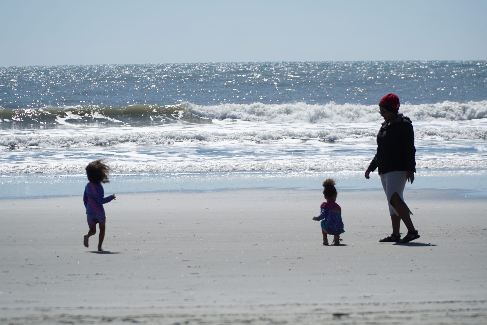
Columbus to Folly Beach is about ten hours. We broke it up with an overnight in Winston-Salem, which sits almost exactly at the halfway point. We looked up things to do and landed on Old Salem — a living history village and National Historic Landmark District built by Moravian settlers in 1766.
The Moravians were a devout Protestant community from Bohemia. They purchased nearly 100,000 acres of North Carolina's Piedmont in 1753, then spent the next decade carefully planning their crown jewel town before laying a single stone. Every lot was numbered by the congregation. They built schools for boys and girls. They had zoning rules and a regulated economy. In 1766, this was extraordinary.
Over 100 original or reconstructed buildings remain across roughly 20 blocks, the layout essentially unchanged from the 18th-century plan. Walking around Old Salem doesn't feel like a theme park. It feels like a neighborhood that never forgot what it was.
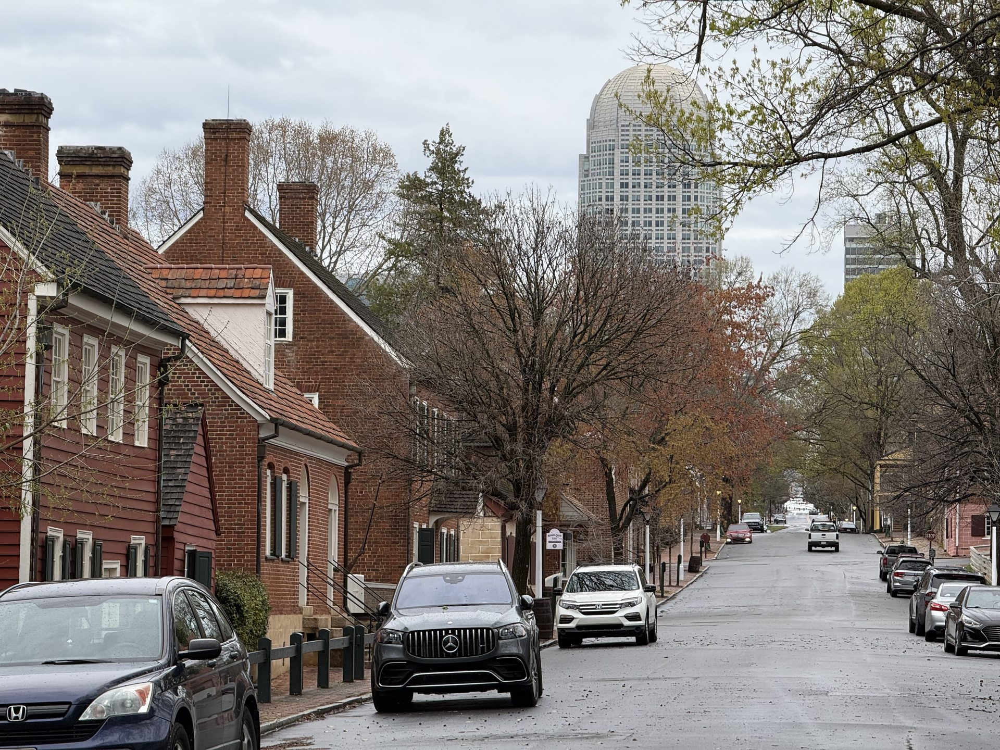
We parked in Old Salem looking for coffee and food. Within minutes of getting out of the car, every phone in the family lit up at once — amber alerts, shelter in place immediately, severe tornado warning.
We looked up. You could see what looked like rotation forming high in the sky. The kind of thing that makes you move fast.
We ducked into the nearest open door: Lot 63, a bakery, coffee shop, pub, and wine bar that opened in 2024 in a historic Moravian building on the main square. The name comes from the original Moravian lot designation — every property in Salem was numbered by the congregation when they laid out the town, and this one has been Lot 63 since the 1700s. The staff handed us coffees and then, as the warnings escalated, ushered everyone down to the basement to wait it out.
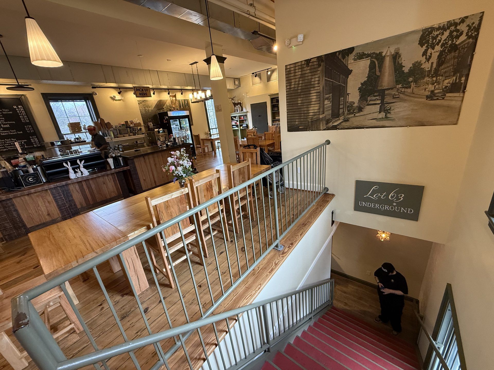
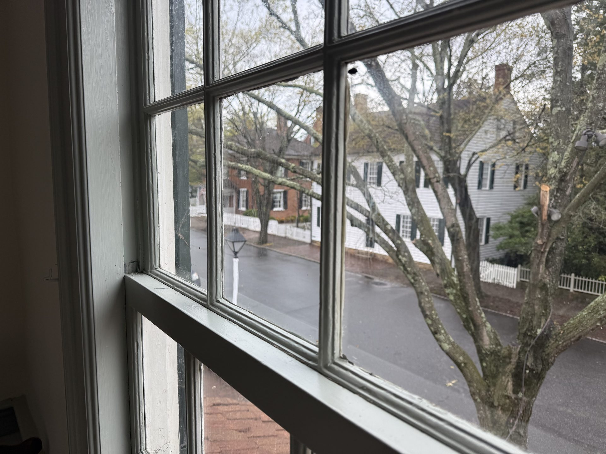
We sheltered from a tornado in a building that has been standing since before the American Revolution. I had a good oat milk latte while we waited it out.
The building held. The storm passed. We came back upstairs, ordered seconds, and watched Old Salem go back to its quiet, unhurried self through rain-streaked windows.
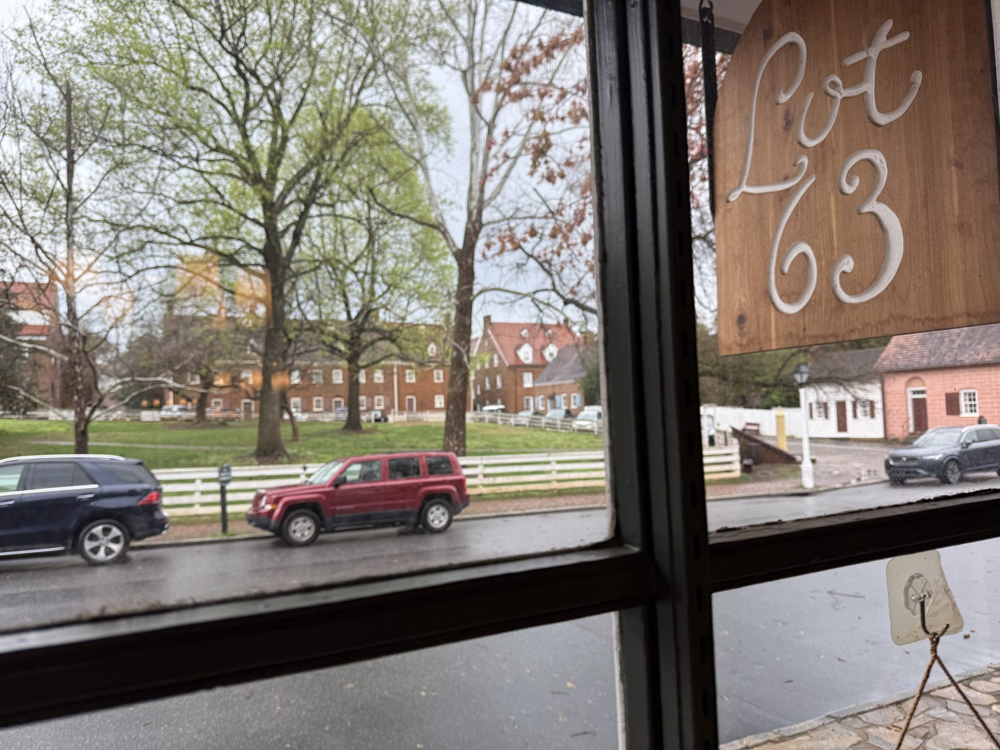
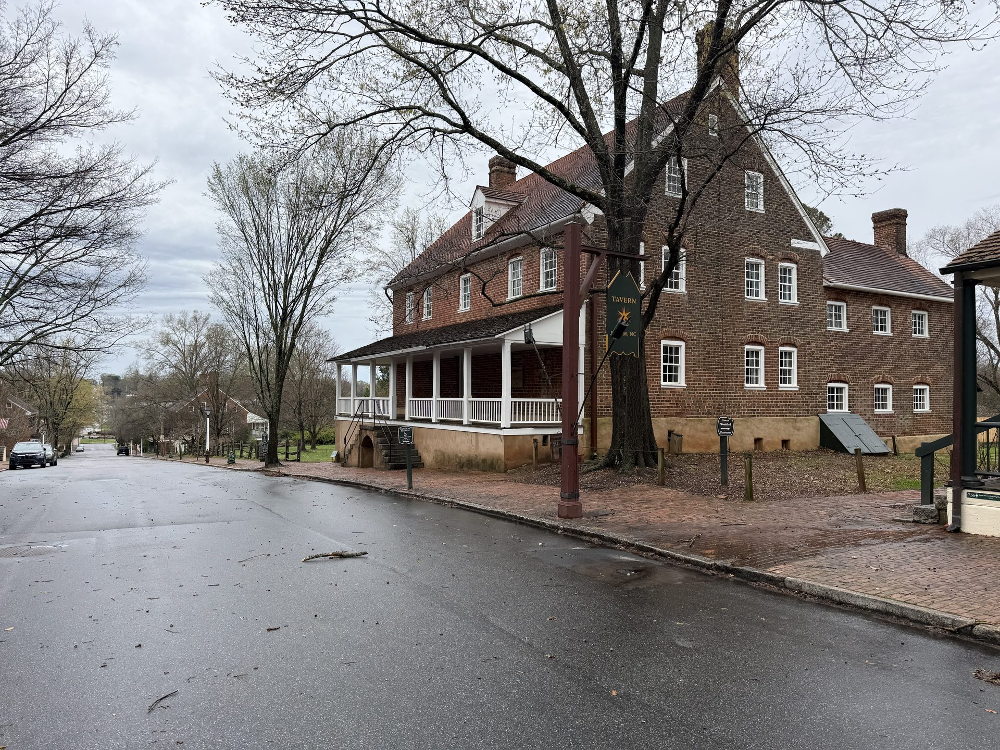
After the storm cleared, we walked over to Bread of Heaven Soul Food on South Main Street. Right next door — immediately to the south — stands the Salem Tavern Museum, built in 1784. The original tavern on that site dated to 1771, burned down, and was immediately rebuilt that same year. George Washington dined there in 1791 during his Southern Tour. The Moravians recorded his two-night stay in detail. We walked around the back to look at the barn. The whole complex is a quiet reminder that this town has been doing things right for a very long time.
Bread of Heaven is the newer chapter in the story — a soul food restaurant that has taken up residence in the neighborhood where Washington once stayed. Oxtails, turkey wings, collard greens, seven-cheese mac and cheese. We got food to take on the road. It was exceptional.
Soul food next door to where George Washington ate dinner in 1791. Old Salem keeps finding ways to collapse American history into a single city block.
Back in the car, pointed toward South Carolina. On the way into the Charleston area we made a stop at Edmunds Oast Brewing Co. — a production brewery and taproom inside the Pacific Box & Crate development in North Charleston. The building's history goes back to 1869 as an outpost of the Pacific Guano Company, which processed seabird-derived phosphate fertilizer there. Now it's home to a 26-tap bar (reportedly the longest in Charleston), a full kitchen, and beer distributed across 11 states. A good way to stretch your legs before checking in.
Our rental was on Folly Beach itself, and it was immediately, absurdly perfect. Plenty of space. A big bathroom. A layout that works when you have three small children and all their gear. And the wallpaper — flamingos and palm trees everywhere, the kind of maximalist tropical print that makes you feel like you've walked into a White Lotus set. The girls were obsessed. We were obsessed. No notes.
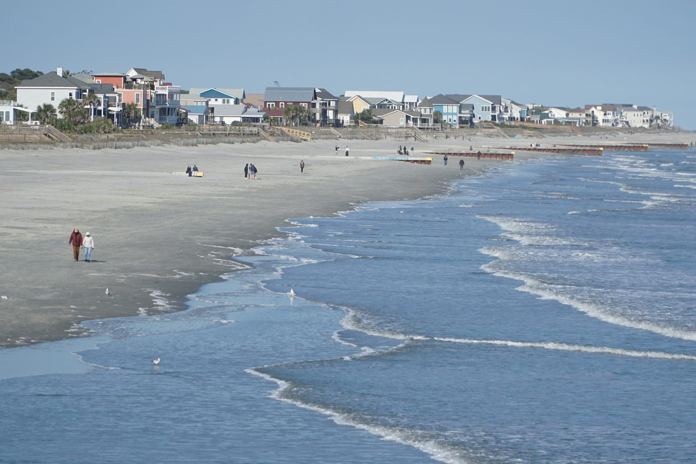
Real-life parenting note: our first morning in town, Margot wasn't feeling well. So before anything else we were at a CVS MinuteClinic getting what she needed. This is what family travel actually looks like. You handle it, you move on.
Once we had medicine in hand, we walked the College of Charleston campus — stately, gorgeous, Spanish moss on every oak, the kind of place that makes you feel underdressed just walking near it. Then lunch at Holy City Brewing in Park Circle, North Charleston.
Holy City started in 2011 in a pedicab garage on a 15-gallon system fashioned from bicycle parts. Now they're on 4.5 acres along Noisette Creek — outdoor bars, a raw bar, a full kitchen, tidal marsh views. They even brew a beer called "Folly Time," named for exactly where we were headed. On a cool March afternoon with kids running around the yard, it felt like exactly the right place to be.
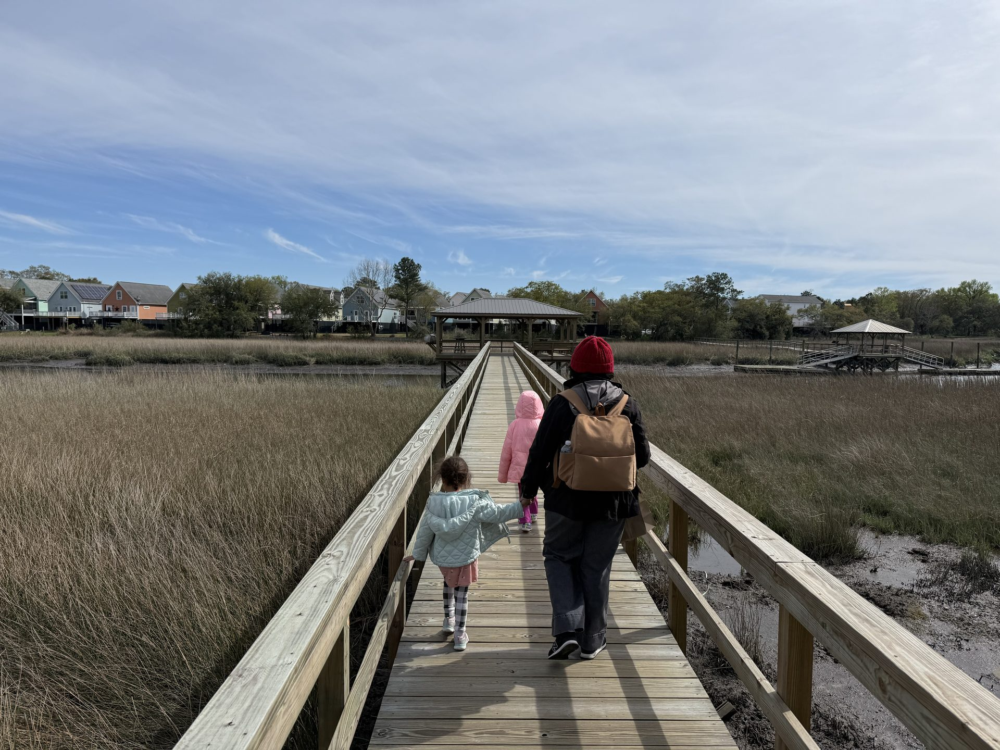
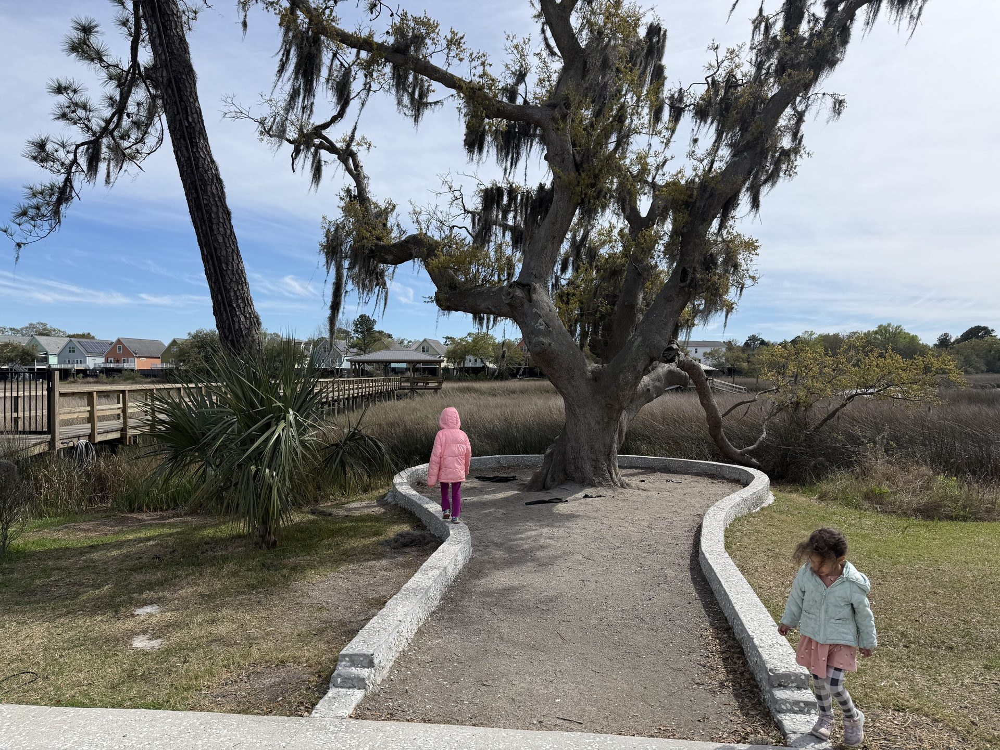
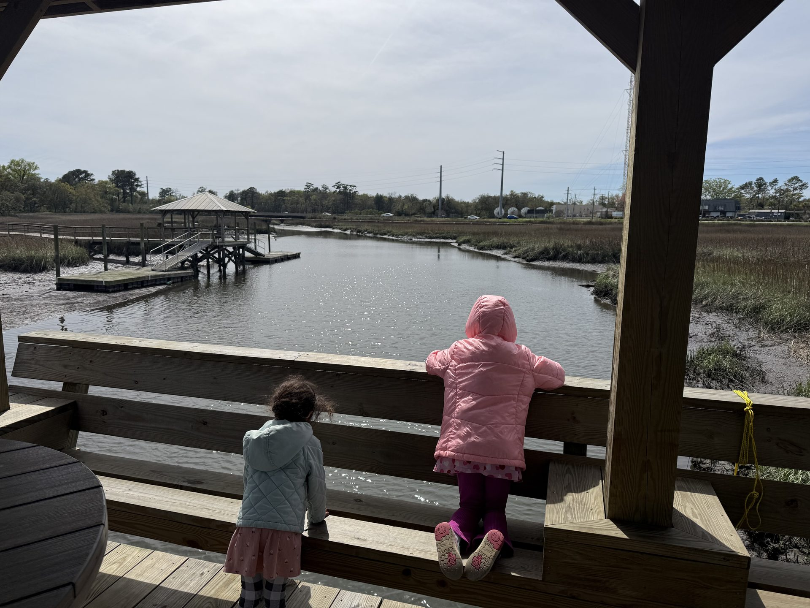
It was cooler than we expected — Folly Beach in late March can go either way, and this year it went toward jacket weather. We didn't care. The girls ran at the ocean like it personally owed them something.
Folly calls itself "The Edge of America," and there's something to that. It's not a polished resort town. It's a little scruffy, deeply lovable — the kind of beach where surfers check swells before coffee and nobody's trying to impress anyone. The waves here are the best and most consistent in South Carolina.
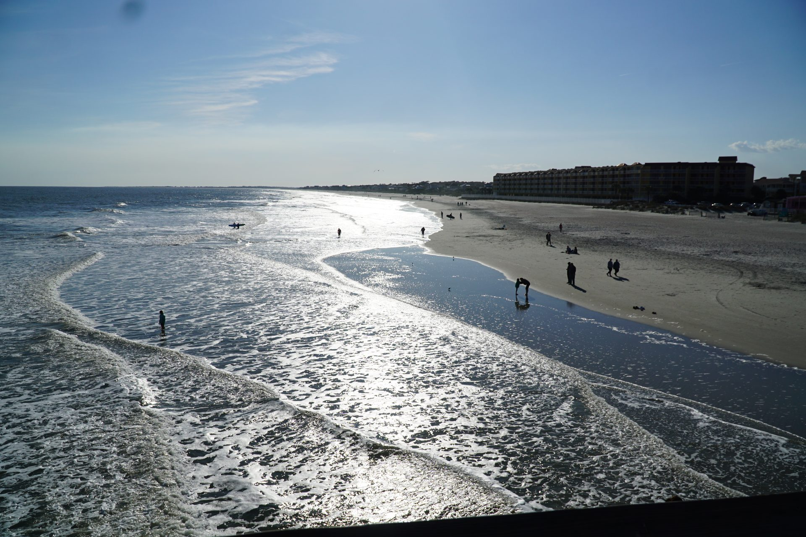
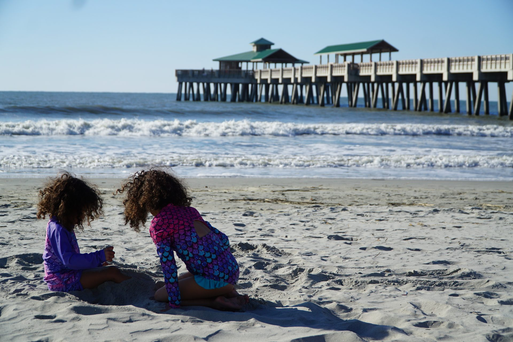
We walked out on the pier and spotted jellyfish in the water below — big ones, drifting lazily in the surf. Lorelei was fascinated. Margot was skeptical. Eliza slept through the whole thing.
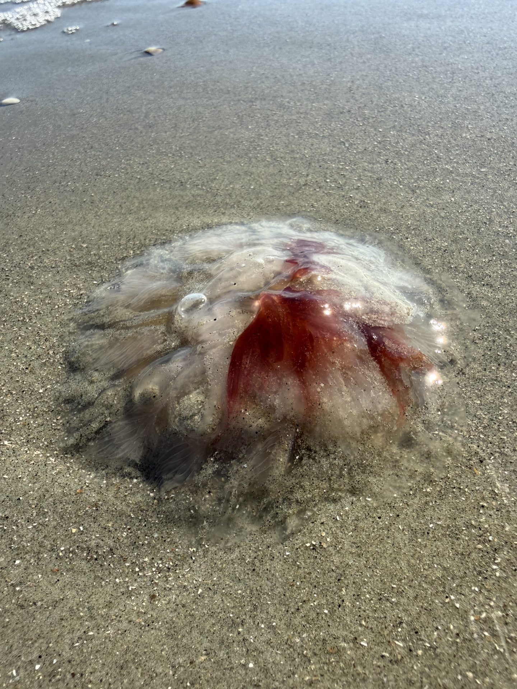
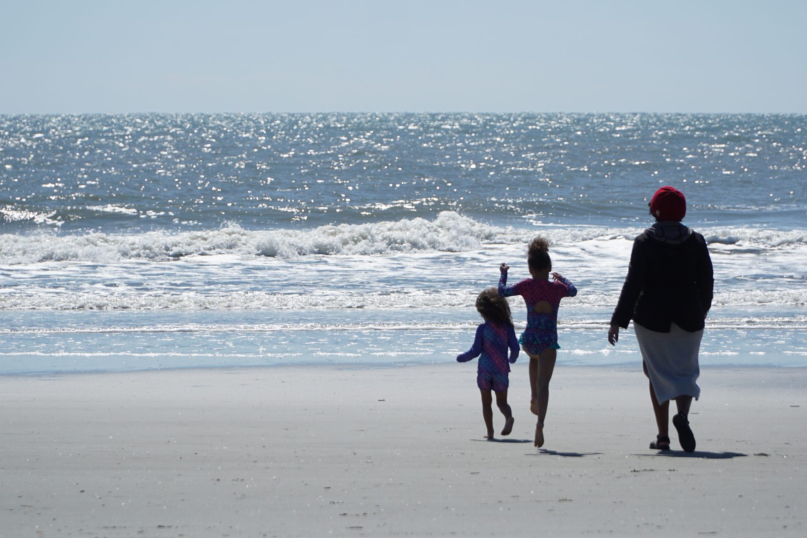
The Charleston City Market has been a public market since the early 1800s — and not by tradition, but by law. In 1788, Founding Father Charles Cotesworth Pinckney and other landowners donated a strip of recovered marshland to the city with a hard legal condition embedded in the deed: it must always be used as a public market, in perpetuity. When city leaders tried to repurpose Market Hall in 1902, the city attorney shut it down by citing that same 1788 deed. The land cannot be anything but a market. More than 200 years later, it isn't.
The market sheds are famous above all for their sweetgrass baskets — woven by Gullah artisans using a craft with African origins going back 300+ years, originally used to winnow rice on South Carolina plantations. More than 50 Gullah craftspeople sell at the market. You can also find local art, handmade jewelry, specialty foods, and apparently terrariums — because I bought two.
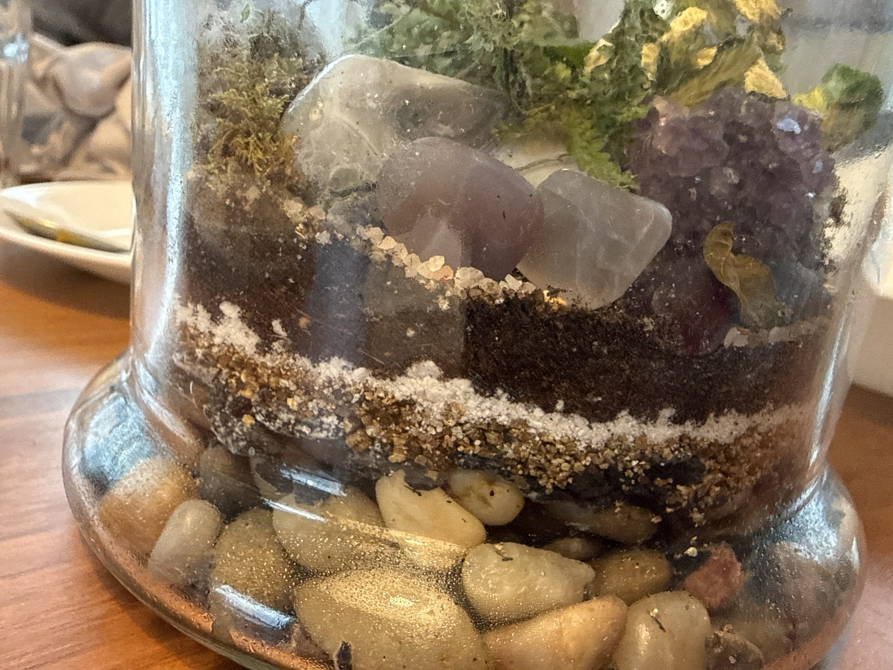
A highlight of the trip: Chico Feo, a laid-back outdoor spot on Folly Beach with picnic tables, cold drinks, and a pile of toy trucks for the kids to play with in the dirt. Exactly the kind of place where nobody minds that you have small children and no plan. We stayed longer than we meant to.
One night we went to a crab shack for dinner — the classic Lowcountry experience. I spent the entire meal as the family's designated crab-cracker, working through a mountain of blue crab so everyone else could eat. I'm not complaining. It was delicious. But I didn't get to finish a full sentence until dessert.
On another night we went up to Catch 23 on the top floor — ocean views, good food, the kind of dinner that earns its price tag. We got ice cream after.
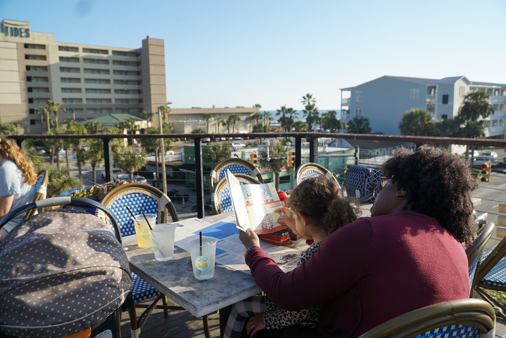
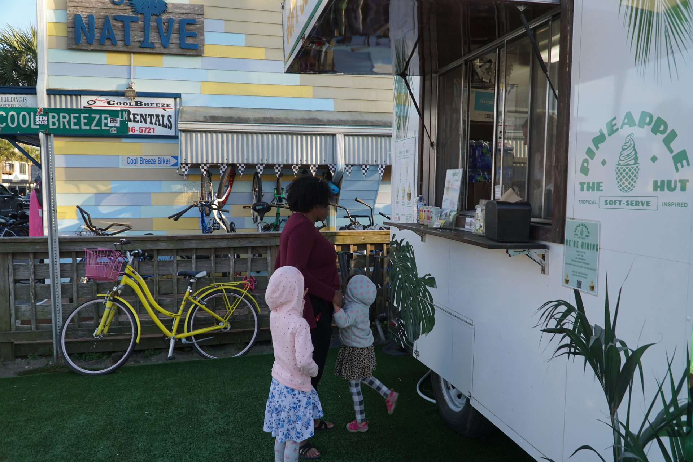
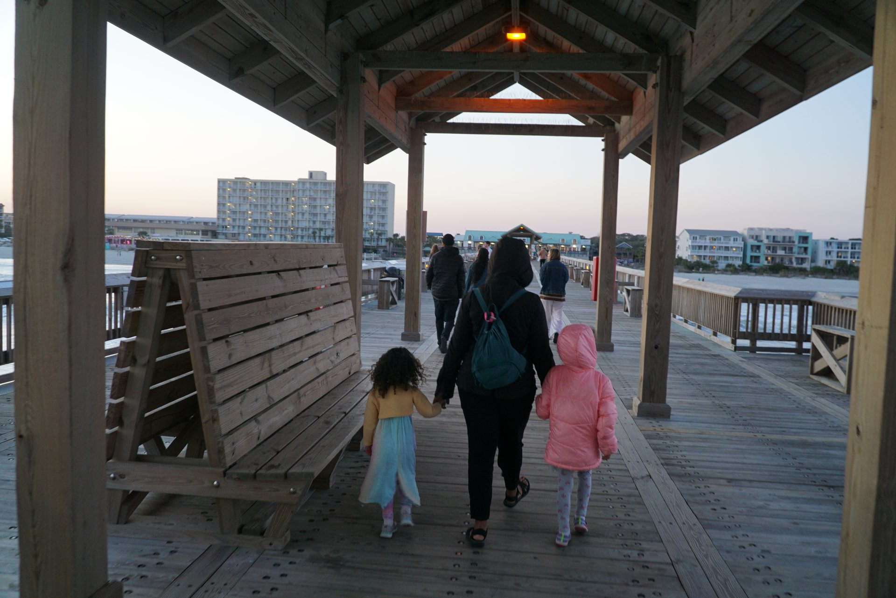
One afternoon while Margot napped, I took Lorelei to the beach — just the two of us. We walked down to the water, watched the waves, and got ice cream on the way back. Nothing dramatic. The kind of simple afternoon that doesn't make it into anyone's highlight reel.
On the walk home, she kept saying it: "Today was a special day." Over and over. Today was a special day.
That's the one I'll remember longest.
On the way back to Columbus, we passed through Galax, Virginia — officially the Old-Time Music Capital of the World, and a legitimate claim. In a barbershop here in 1924, a group of local musicians formed a string band called The Hill Billies. Their recordings became the first major commercial success in what would become country music. The Old Fiddlers' Convention, held every August in Galax since 1935, is the world's oldest and largest traditional old-time and bluegrass music festival. The Blue Ridge Music Center — a national park site — sits nearby, preserving and celebrating that Appalachian musical heritage.
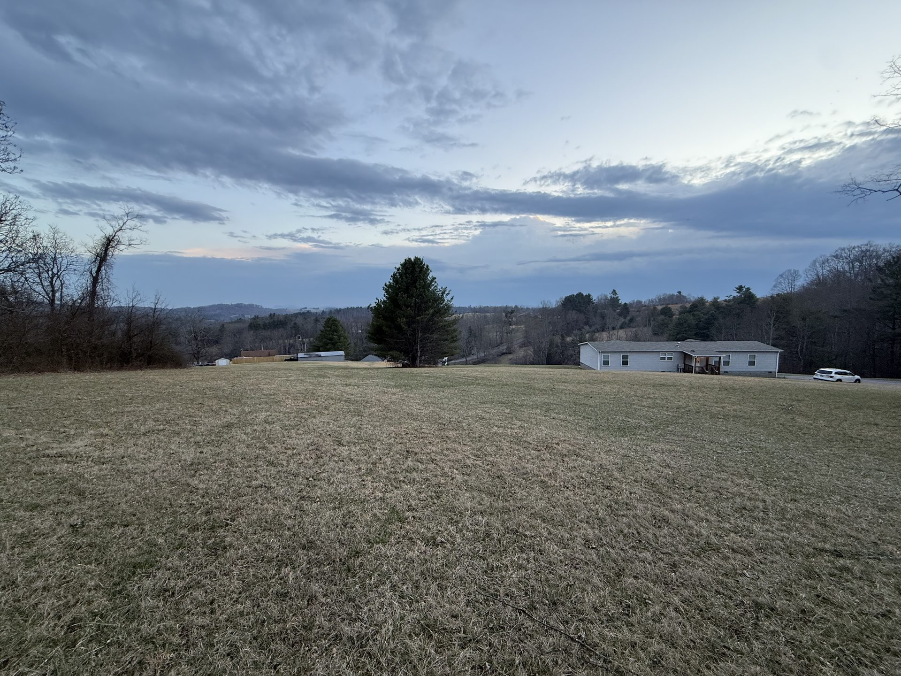
For dinner we stopped at Creek Bottom Brewing & Distillery — the anchor of Galax's food and drink scene, founded in 2013 by John Ayers and expanded into distilling in 2022. Wood-fired brick-oven pizza, smoked wings, handcrafted cocktails including their own Snake Creek Bourbon, live music Wednesday through Saturday. It's a community partner of the Blue Ridge Music Center. The kind of place that would be a destination in any city, tucked into a corner of rural Southwest Virginia where it fits perfectly.
On the way out of Galax the next morning, we found a tiny diner — the kind of spot with a handwritten menu and tables that don't quite match. We walked in and immediately understood we were somewhere unexpected: nearly everyone in the place was from Honduras. Out in the backyard, a group of young guys — 16, 17, 18 years old — were playing a full soccer match. Not watching one on TV. Playing one, right there, in the field behind the diner. The place was packed and buzzing.
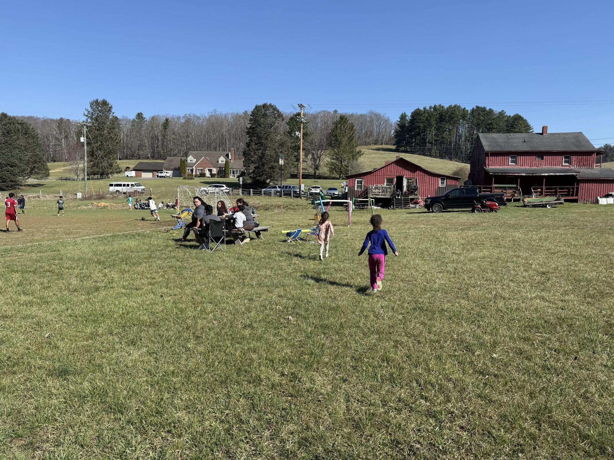
This is my favorite kind of travel discovery — the one you don't plan, can't recreate, and wouldn't have found if you'd taken the highway. We got back in the car full and happy and drove the rest of the way home.
Spring break with little kids is chaotic. You will handle a tornado warning, a MinuteClinic visit, and a baby who slept through the jellyfish. You'll crack crab for the whole table and not mind. You'll find terrariums at a market that has been required by deed to stay a market for over 200 years. You'll stumble into a Honduran breakfast diner in rural Virginia where teenagers are playing soccer in the backyard.
And if you're lucky, your five-year-old will hold your hand on the way home from a nothing-special afternoon at the beach and tell you — over and over — that today was a special day.
It's worth it. Go anyway.
← Back to Blog